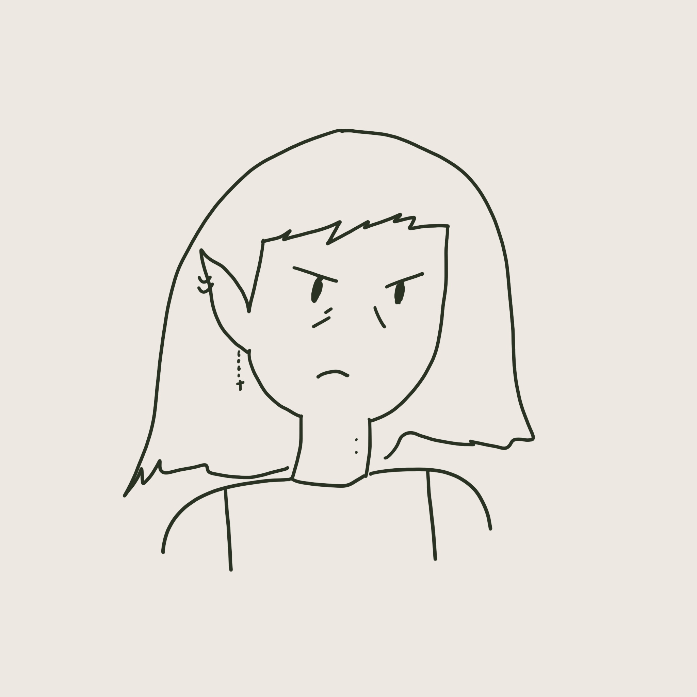

Karyssa Krebs
about me
I'm a cogsci major minoring is cs. I'm from San Diego, Oceanside specifically. Last year I interned abroad in Seoul, South Korea and the year before that I studied abroad in Florence, Italy. I love traveling especially the experience of immersing oneself in a different culture. I also love trying new food and eating and learning about the history.